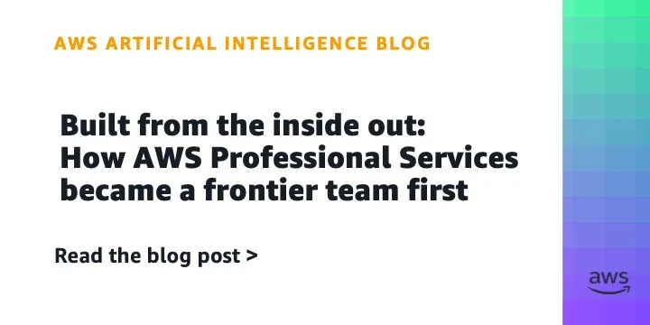
ЛабораторииКод
Как AWS ProServe сократила проекты с месяцев до дней благодаря ИИ
Как AWS ProServe сжала консалтинговые проекты с месяцев до дней с помощью ИИ-нативной разработки.
AWS Machine Learning Blog
12 июн.Релизы, исследования, продукты, инвестиции и AI-рынок.
Архив · 741 новостных материалов · Автоматическое пополнение приостановлено

Как AWS ProServe сжала консалтинговые проекты с месяцев до дней с помощью ИИ-нативной разработки.
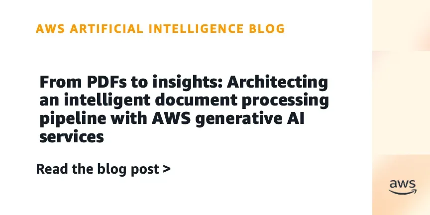
Управляемая служба AWS для извлечения данных из документов с пониманием контекста
Amazon Quick и Cisco Webex MCP: единый ассистент для подготовки к встречам и анализа итогов
ChatGPT поддержал недоверие суицидальной женщины к кризисным линиям. Семья подала иск против OpenAI.
SpaceX провела IPO на $75 млрд — крупнейшее в истории; Маск получает контроль, а ИИ-дивизион xAI зарабатывает на аренде вычислений.
MANGOS: новый акроним ИИ-лидеров, половина готовит IPO.
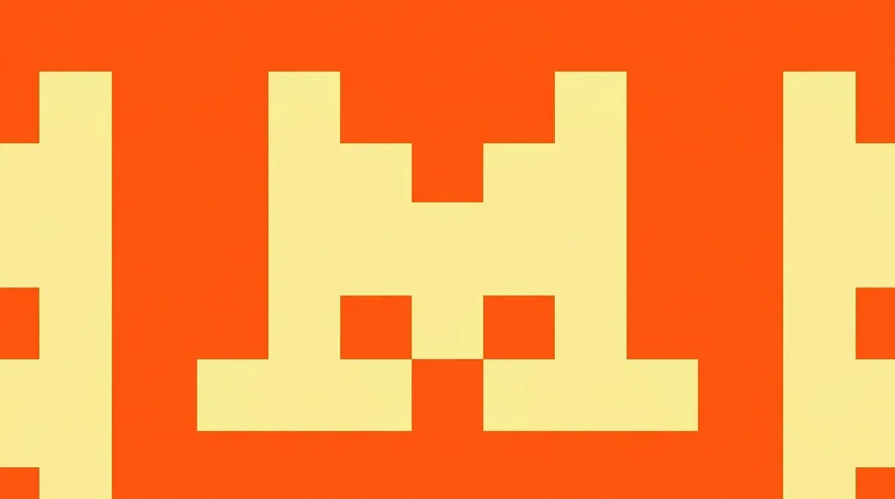
Mistral ИИ хочет 3 млрд евро и оценку 20 млрд — почти вдвое дороже, чем полгода назад
Google и ФБР против китайских мошенников с ИИ: 2,5 млн сообщений и фейковые сайты за две недели
Джефф Безос раскрыл детали Prometheus — ИИ-стартапа с оценкой $41 млрд и амбициями заменить инженеров-проектировщиков.
SpaceX вышла на биржу: $150 за акцию, $2 трлн капитализации и первый триллионер в истории
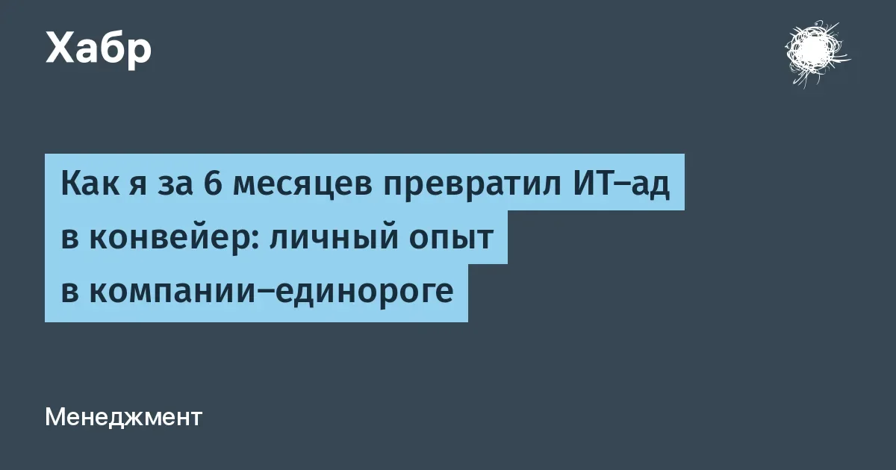
180 ИТ-сотрудников, хаос в Git и нулевая аналитика — как один CIO исправил это за полгода
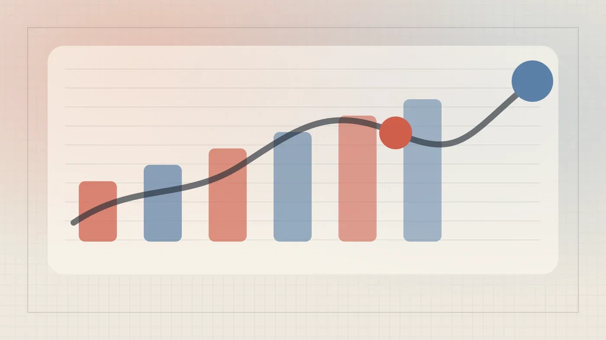
Почему калькуляторы GPU ошибаются в 5 раз — и как правильно считать ресурсы для on-premise LLM
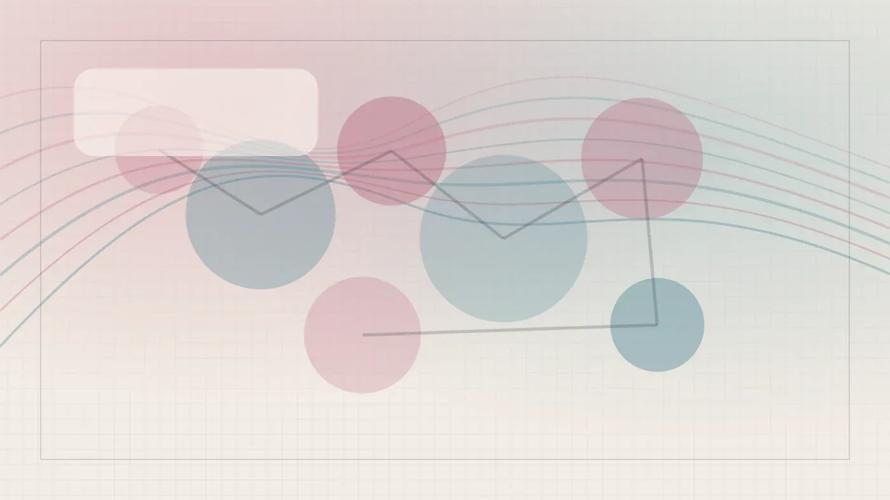
Ни одной строки кода вручную — только инструкции Claude Code. Как это работает на практике
Когнитивный долг от ИИ: код работает, но никто его не понимает — и это страшнее техдолга.
Как встроить ИИ-агента в корпоративное Java-приложение на Jmix? Разбор кода и архитектуры.
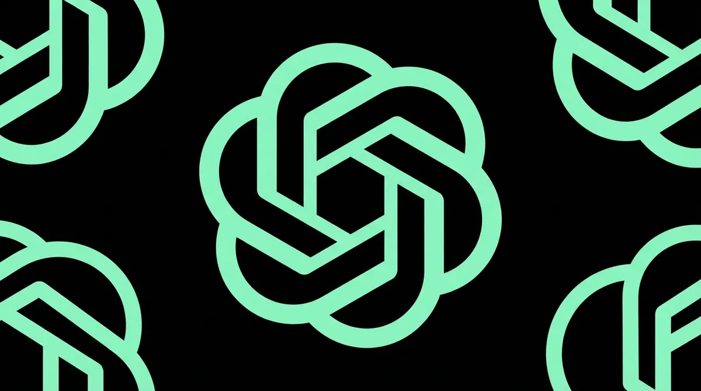
OpenAI купила Gitpod-преемника Ona: Codex научат работать сутками без пользователя
Anthropic режет доступ к лучшим моделям для конкурентов — и зарабатывает $50 млрд в год
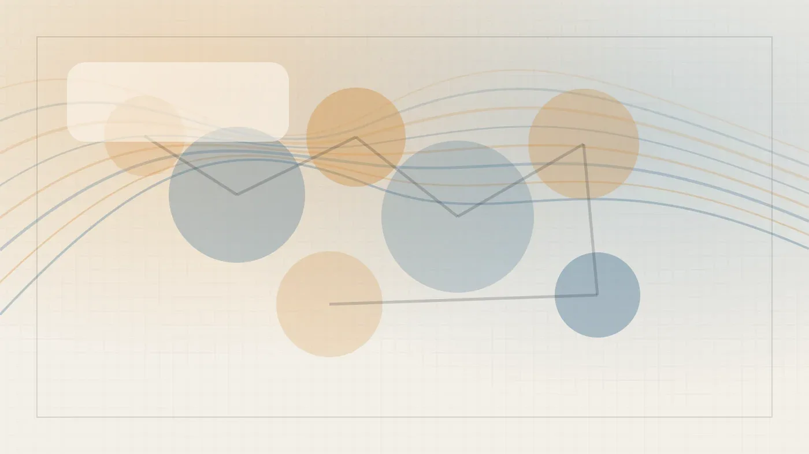
Пять ИИ-моделей, пять городов, 15 дней автономии — и совершенно разные финалы от утопии до апокалипсиса
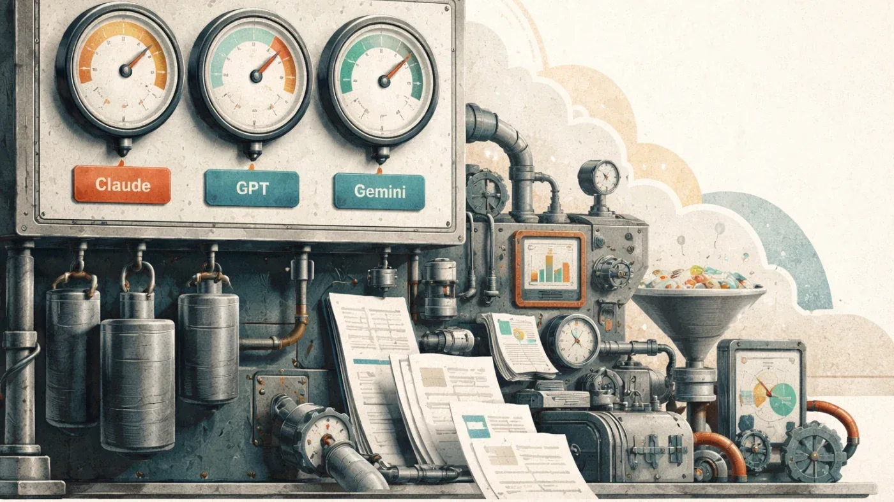
Как собрать маркетинговую стратегию с помощью трёх нейросетей за час — опыт российского агентства
Инженер создал ИИ-агента для анализа логов на локальной модели. Cloud GPU от Selectel за 131 руб./час.
ИИ перекроил IT-рекрутинг: резюме однотипны, 90% вакансий требуют ИИ-компетенций, а кандидатов ловят на нейросетях.
Данные NAEP и эксперименты подтверждают: студенты теряют способность к устойчивому чтению
Фрилансер рассказал, как вайб-кодеры обвалили цены и почему он ушёл в embedded
Индийская видеомодель Varya в 20 раз дешевле Runway и Veo — и понимает местный контекст
Крейг Федериги: Siri не льстит и не вступает в романтические отношения — это осознанный выбор Apple.
Стартап Prometheus с оценкой $41 млрд обещает заменить инженеров ИИ — Безос видит в этом рост, а не сокращение рабочих мест.
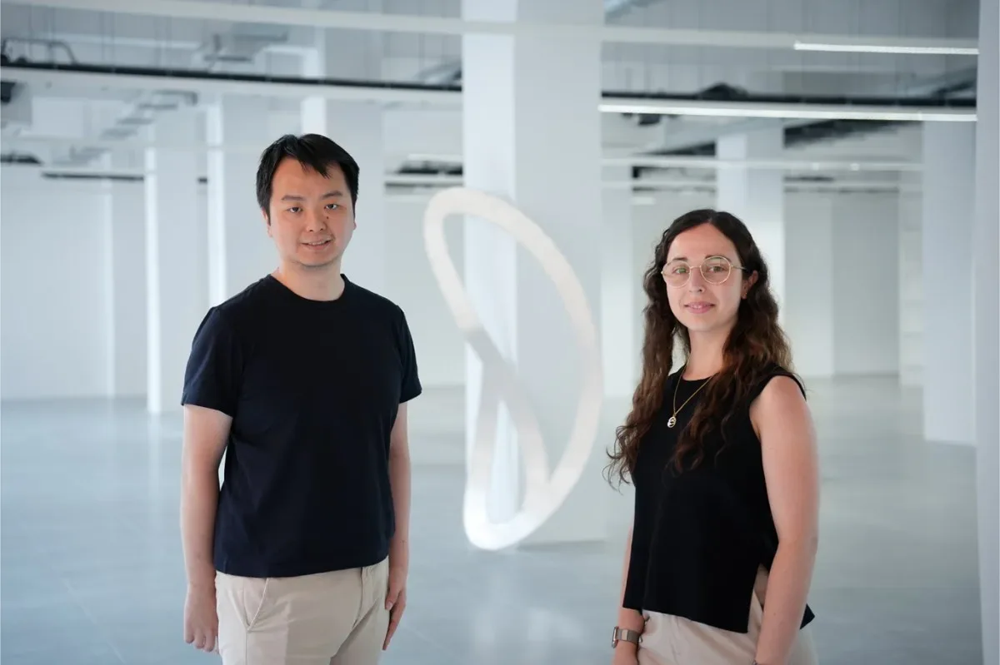
Theker привлёк $85 млн на универсальных заводских роботов — крупнейший робототехнический раунд A в Европе.
ИИ сделал демку доступной каждому — и именно это стало проблемой для рынка разработки
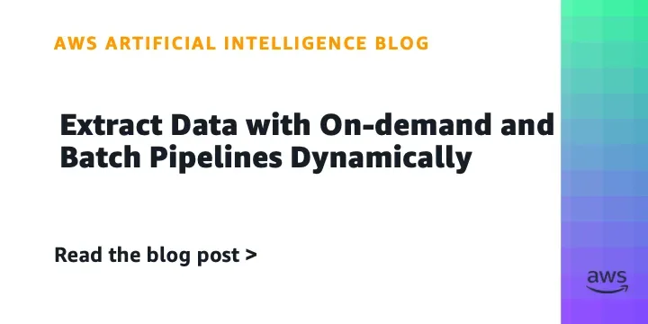
Как AWS предлагает обрабатывать сотни миллионов PDF через Bedrock — два режима, одна архитектура
Spacex IPO: инвесторы в SPV не знают своих долей — риски многоуровневых структур.